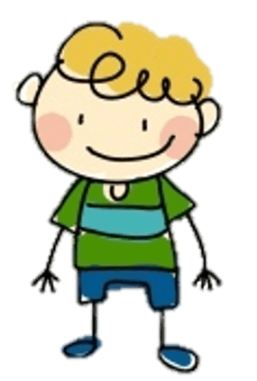

<!--
  Generated template for the Pagina1Page page.

  See http://ionicframework.com/docs/components/#navigation for more info on
  Ionic pages and navigation.
-->


<ion-header>


  <ion-navbar color="primary">


    <ion-buttons>
      <button ion-button
              icon-only menuToggle>
        <ion-icon name="menu"></ion-icon>
        <ion-title  text-center>Guia N°1</ion-title>
        
      </button>
      <!--  -->

    </ion-buttons>

  </ion-navbar>


</ion-header>


<ion-content>

  <ion-card>
    
    <ion-card-content>

<br><br>
<h1 text-center> Gestión del Auspiciamiento<br> <hr> </h1>

      <!-- <ion-card-title>
        Nine Inch Nails Live
        </ion-card-title>
      <p>
        The most popular industrial group ever, and largely
        responsible for bringing the music to a mass audience.
      </p> -->

      <ion-list>

  <ion-item *ngFor="let icong1 of iconsg1"
  (click)="irguia1a1()">
    <ion-avatar item-start>
      
    </ion-avatar>

    <h2>{{ icong1.nombre }}</h2>

    <!-- <h3>Don't Know What To Do!</h3>
    <p>I've had a pretty messed up day. If we just...</p> -->
  </ion-item>


  <ion-list>
    <ion-item (click)="irguia1a1()">
      <ion-avatar item-start>
        
      </ion-avatar>
      <h2>Principios del auspiciamiento</h2>
      <!-- <p>Ugh. As if.</p> -->
    </ion-item>
  </ion-list>

  <ion-list>
    <ion-item (click)="irguia1a2()">
      <ion-avatar item-start>
        
      </ion-avatar>
      <h2>Conceptualización relevante</h2>
      <!-- <p>Ugh. As if.</p> -->
    </ion-item>
  </ion-list>
  <ion-list>
    <ion-item (click)="irguia1a3()">
      <ion-avatar item-start>
        
      </ion-avatar>
      <h2>Características de la gestión <br> del auspiciamiento</h2>
      <!-- <p>Ugh. As if.</p> -->
    </ion-item>
  </ion-list>
</ion-list>
    </ion-card-content>
  </ion-card>

</ion-content>
